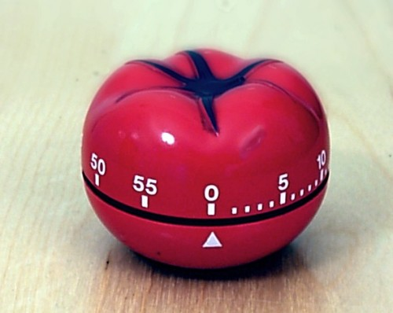
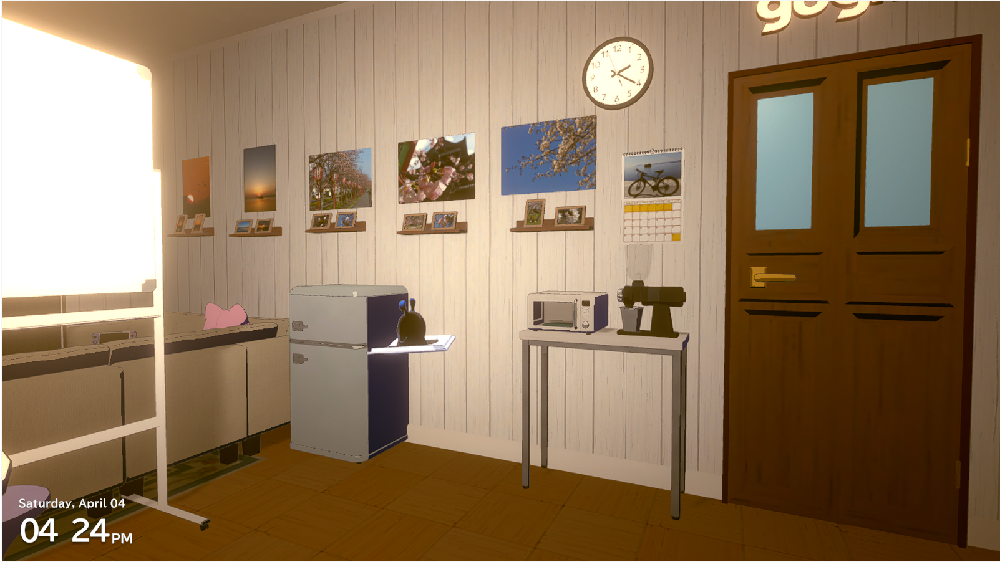
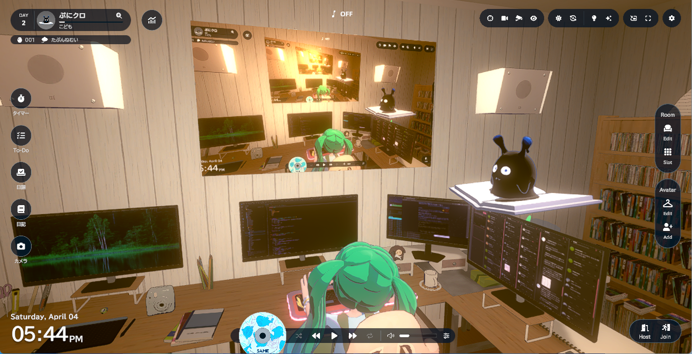

Gogh で てきぱきワーキング【2026-04-06 追記】

gogh で作業支援
いわゆる作業支援ゲームあるいはもっと簡単に「作業ゲー」と呼ばれるものは色々と登場しているが gogh (ゴッホ) で自身の作業ルームを公開されている方を Bluesky で見かけたので私も試してみた。
- gogh - Focus with Your Avatar
- ambr｜note : gogh の制作会社によるブログ
- gogh ゴッホ - YouTube : gogh の公式 YouTube チャンネル
- @goghjpn.bsky.social on Bluesky : gogh の公式 Bluesky アカウント
Steam 版の gogh は作業ルームをかなり細かくカスタマイズできて，しかもそれを他のユーザと共有できるというので，クリエイター寄りの方々にも人気らしい。
実際、マルチプレイヤー機能が入ってからは本当に爆発的に広まりました。これはgogh配信の大きな特徴なのですが、想像もしていなかったような有名なイラストレーターさんや漫画家さんが次々に作業配信をしてくれました。開発チームには漫画好きやイラストレーターファンが多いので「え…？あの先生も…！？」とチームのSlackに毎日驚きと喜びが溢れていました。
モバイル版（Android/iOS）が無料で提供されているにもかかわらず有料の Steam 版がこれだけ売れてるというのは，この辺に理由があるのかも知れない。
Steam 版の gogh の特徴としてはマルチルーム（マルチプレイ）機能の他に
- ポモドーロ・タイマー1
- ToDO リスト，日課，日記の記入・管理
- 複数のアバターを作成可能（最大9アバター）
- DLC でコラボレーションアバターも提供されている
- 複数の部屋を作成可能（最大15部屋）
- 大人数が入れるLサイズ部屋も作成可能
- ルームアイテムへのWebカメラストリーミング
- OBS の仮想カメラにも対応（後述）
- お絵描きチャット（通常のチャット機能，音声チャット機能はない）
- ローカル音楽プレイリスト
などといったものがある。

{kind=link}
試しに（マルチプレイヤーでも使えるように）Lサイズ部屋をひとつ作ってみたのだが，うっかり興が乗ってしまい夜ふかし（というかほとんど徹夜）してしまった。 我ながら何やってんだか。

{kind=link}
goghより
任意の画像データ（GIF も可）を絵や写真オブジェクトとして室内に設置できる。 上の部屋では Flickr で公開している写真を展示してみた。 まぁ，飾るような写真じゃないんだけどね。 雰囲気だよ雰囲気（笑）
gogh と OBS
gogh は OBS と組み合わせてゲーム内でストリーム配信することもできる2。 たとえばパソコンモニタやプロジェクタ・スクリーンといったオブジェクトに OBS の仮想カメラの映像を映し出すことができる。
今まで配信とか無縁の生活だったが，面白そうなので OBS Studio をインストールして試してみた3。 のだが，どうしても上手くいかない。 最初は OBS 側のシーンやソースの設定の問題かと思って色々弄ってみたが全然ダメで，ふと思いついて Web カメラを gogh のアイテムに直結してみたが，これもダメだった。 これって多分 gogh 側にカメラ映像が渡ってないな。
ちなみに私のメインマシンは Ubuntu なのだが，よく考えたら Steam 版 gogh は Windows 版のみの提供で Linux/Ubuntu 環境では Proton でエミュレーションして動かしているのだった。 だから OBS との連携ができなくても仕方ないのかな？
しょうがない。 ミニ PC (Windows 機) に OBS Studio を入れるか。 あまりパワーがないのでまともに動くか不安だけど。

{kind=link}
goghより
おっ。 あっさり動いた。 自分で自分を映してるので合わせ鏡みたいになってるが，まぁよかろう。 一応 gogh とは別のゲームを起動して仮想カメラで映してみたが，これも問題なかった。 パワーがないのでちょっとカクカクしてたけど（笑）
.｡oO（マルチプレイ用に部屋を公開したらストリーミングが切れてしまった。これってこういうもの？）
OBS を使えば YouTube などのサービスにも配信できる。 とはいえ，これで稼ぐ気はないし，何となく Google のサービスは嫌なので atproto エコシステム下のサービスである Streamplace を使うことを考えてみようかな。
上手くいったらまた報告する。
ブックマーク
- gogh、Steam版の販売本数が30万本を突破！ | 株式会社 ambrのプレスリリース
- PC版『gogh（ゴッホ）』スタートガイド： アバター・ルーム・マルチプレイで集中空間をつくる | XRメモランダム
- gogh ゴッホの感想｜環境音とポモドーロで作業に集中｜瀧本祐ヰ
- Xユーザーのgogh公式｜Steam版発売中＆アプリ配信中さん: 「[Steam版 Tips] gogh × OBSで「gogh内作業配信」する方法をまとめました！…
参考

- てきぱきワーキン〓ラブ (5) (ビームコミックス)
- 竹本 泉 (著)
- エンターブレイン 2000-05-01
- コミック
- 4757700423 (ASIN), 9784757700420 (EAN), 4757700423 (ISBN)
- 評価
ついに（「さよパラ」にも出てきた）アレックスの謎が解ける？
-
ポモドーロ・タイマーはいわゆるポモドーロ法（Pomodoro Technique）に基づいたタイマーで，メインの作業時間（通常25分）と休憩時間（通常5分）を交互に繰り返すことで集中力を維持するためのもの。gogh では作業時間と休憩時間の長さはユーザが自由に設定できる。「ポモドーロ」とはイタリア語で「トマト」を意味し，この名前はこの方法を考案した Francesco Cirillo がトマト型のキッチンタイマーを使っていたことに由来するらしい。 ↩︎
-
OBS (Open Broadcaster Software) はオープンソースの高機能ライブ配信・録画用ソフトウェア。 “OBS Studio” という製品名で無料提供され Windows, macOS, Linux 用のバイナリが提供されている。映像・音声のミキシング，ライブ配信，高画質録画，シーンの切り替えといった機能を備えている。 YouTube や Twitch といったサービスへの配信にも対応している。また仮想カメラ機能を使い Zoom や Microsoft Teams といったビデオ会議ツールのカメラ入力としても利用できる。 ↩︎
-
ちなみに OBS Studio のインストールには通常の方法の他に Steam からインストールする方法もある。 Steam 版は自動更新してくれるメリットがある。ただし Windows バイナリのみの提供で Ubuntu 機ではインストールできないこともないが起動時に「ネイティブ版を使え」と怒られる。それでも無視して起動しようとしたらクラッシュした。 Linux ネイティブの OBS Studio は Flatpak で提供されている。また Ubuntu 環境では PPA に公式リポジトリがあるので，そちらから APT でインストールすることもできる。 ↩︎